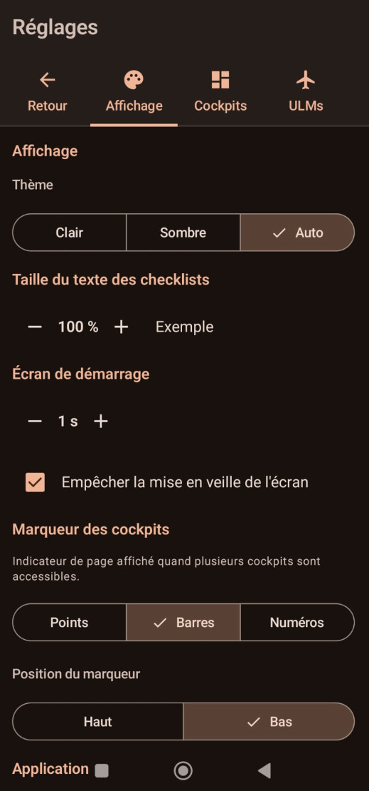

🎨
Affichage
Thème, texte, démarrage, marqueur des cockpits, fermeture
Thème · sombre / auto
Marqueur · points / barres / numéros
Contour · Couleur / Carbone / Métal
Écran maintenu allumé

Possibilités
Thème & texte
- Thème sombre ou auto (suit le système).
- Taille du texte des checklists réglable par paliers.
Marqueur des cockpits
- Style de l'indicateur de page (quand plusieurs cockpits sont accessibles) : points, barres ou numéros.
- Position du marqueur : haut ou bas de l'écran.
Démarrage & veille
- Durée de l'écran de démarrage (splash) réglable, ou désactivé.
- Option écran maintenu allumé pendant l'utilisation.
Contour des cadrans
- Style du contour des instruments analogiques et du fond des titres des instruments numériques : Couleur unie, Carbone ou Métal.
- En mode Couleur, choisissez la teinte par défaut dans une palette sombre (noir, gris, bleu, violet, orange, vert, jaune).
- Cette couleur est le défaut commun à tous les instruments ; elle peut être surchargée instrument par instrument lors de l'édition d'un tableau de bord (Réglages ▸ Cockpits).
Application
- Quitter l'application : arrête le service de vol et ferme complètement l'app (les valeurs saisies sont conservées).